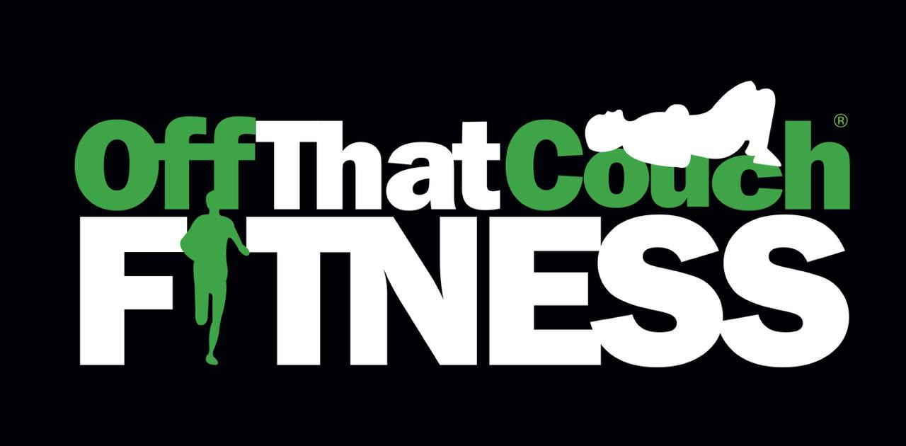

Training plan apps don't track what you eat. Nutrition apps don't know what you're training for. Fitness trackers give you numbers and no guidance. Phase 1 puts all four in one place — and lets them talk to each other.
Plans span triathlon, running, cycling, swimming, strength and recovery — every activity on the OTCF site.
Each plan carries PDF, video and audio guides, all served from the admin console.
Nutrition targets move with the day's training load. That link is the product.
Built from the supplied logo. The brand green carries every primary action and doubles as the Run discipline colour; the other disciplines take their own hues so charts stay readable without inventing a second brand.
Dark is the primary theme. The logo is dark-first, and endurance athletes use the app at 5am and after dusk. Light mode is a full, equal treatment — not an afterthought — and every screen here renders in both.
Green is rationed. It marks the one thing that matters on each screen: today's key session, the primary button, the unlock. Everything else is neutral so the green always reads as "act here".
Numbers are the hero. Tabular figures, tight tracking, heavy weights. An athlete scans for watts, paces and grams — the type scale is built around making those instantly findable.
No emoji anywhere. Every icon is a hand-tuned inline SVG on a single stroke system, so the interface reads as a serious training tool rather than a consumer toy.
Seven steps, but the athlete only ever sees one decision at a time. The plan preview does the selling: it shows the real generated plan — phases, weekly shape, what's free — before asking for a card.
The habit the whole product depends on. Open the app, see one clear session, train, and have it log itself when the watch syncs. Everything else is secondary to getting this loop right.
Every discipline on the OTCF site, each plan packaged as a training plan plus guides in PDF, video and audio. Locked content is always visible and blurred — never a dead end, always an upsell surface.
The differentiator, made visible. The coach answers a training question by looking at fuelling data; the nutrition targets move because of what's on the plan today. Neither is possible in a single-category app.
Analytics is where the three data streams finally sit on one surface. The paywall arrives after that value has been felt, not before it.